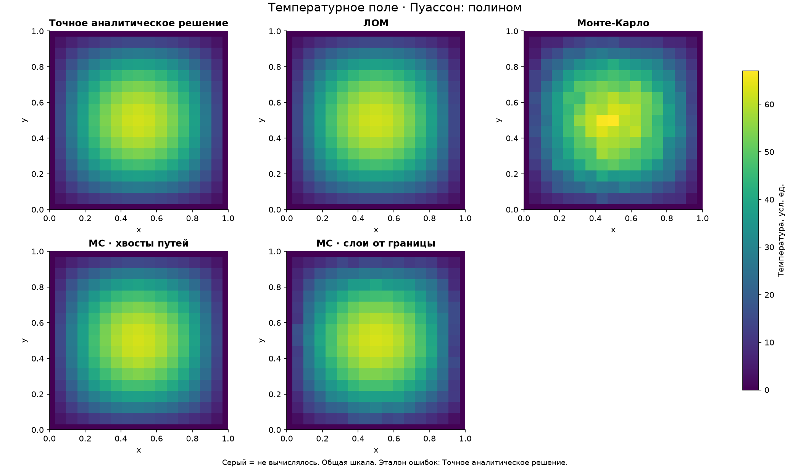
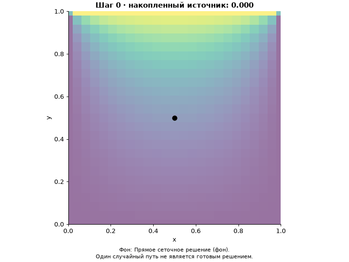

PDE LAB / ГОТОВЫЕ РАСЧЁТЫ
Как получается ответ — и чего он стоит
Четыре метода для одной стационарной задачи: ЛОМ, Монте-Карло, хвосты путей и слои от границы. Ошибки считаются к точному решению, когда оно известно; иначе — к прямому сеточному решению. Эталон подписан в каждом отчёте.
Начните с центра. Затем откройте всё поле: там лучше видны различия между методами. Эти примеры уже посчитаны; для новых параметров запустите программу Python.
От простого к интерактивному
Для одного слайда

Тепловые карты с общей шкалой, срезы и таблицы. PNG можно вставлять в презентацию.
Время и ошибка одного запуска
Для объяснения алгоритма

В HTML можно выбирать хвост пути и листать реальные рассчитанные слои. GIF удобен, когда интерактивный показ недоступен.
Для исследования
- Наведение на узел: точное численное значение.
- Выбор метода и карты ошибки.
- Запуск и остановка траектории.
- Ползунок глубины готовых слоёв.
- Вращаемая 3D-поверхность.
- Кривые времени и точности.
Поверхность — эталон. Маркеры — реально рассчитанные точки; неизвестные значения не дорисовываются.
Серии измерений
Одинаковая задача, n=24; N=128, 512, 2048; пять повторений. У ЛОМ меняется относительный допуск невязки: 10⁻², 10⁻⁴, 10⁻⁶, 10⁻⁸. Медиана времени и ошибка по независимым запускам.
Время — точность
ТочкаУчастокПолеСравнивайте при сопоставимой ошибке. Данные каждого повторения лежат рядом в benchmark.csv.
HTML содержит библиотеки внутри и открывается без интернета. Это прототип для Δu=f с заданной границей в квадрате. Итерации и кадры не являются физическим временем. Область применения, формулы и ограничения описаны в руководстве PDF и README.md.